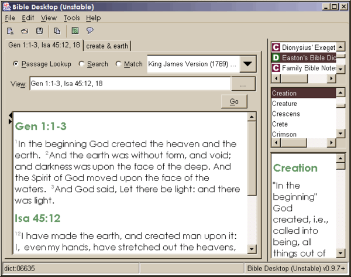

Bible Desktop is a Free Bible Study tool that will run almost anywhere.
It uses Java to run from your browser, so long as you have that it should be
easy. Bible Desktop uses the J-Sword project to read modules in Sword format
so there is a huge range of Bibles, Commentaries and Dictionaries - one of the
largest collections available.
Bible Desktop is open source software so it is freely available to anyone. It is licensed under the GPL.
Bible Desktop is available from the download page.
If you want to see what it looks like, the screenshots
will help.
A summary of recent news will help you keep in touch
with development. Bible Desktop is based on the J-Sword Project,
and reads modules created by the Sword Project.
There is a page of screenshots that introduces the various features of Bible Desktop, including the tabbed interface, handy research area and advanced search features.
The Windows version looks like this: 